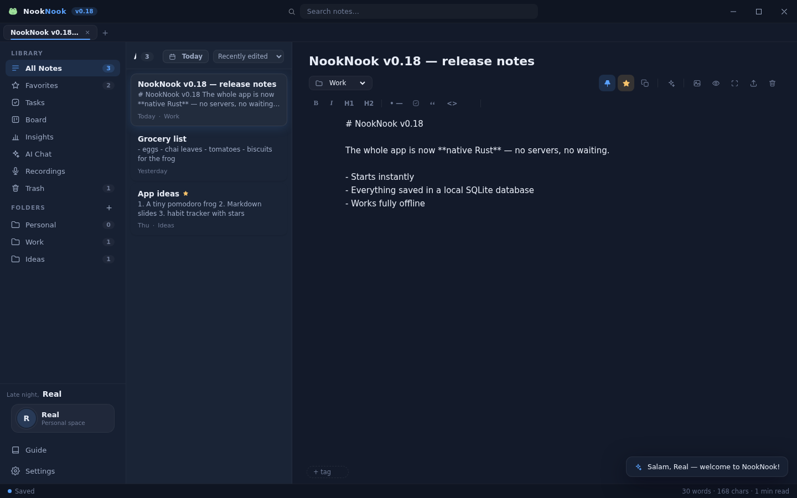
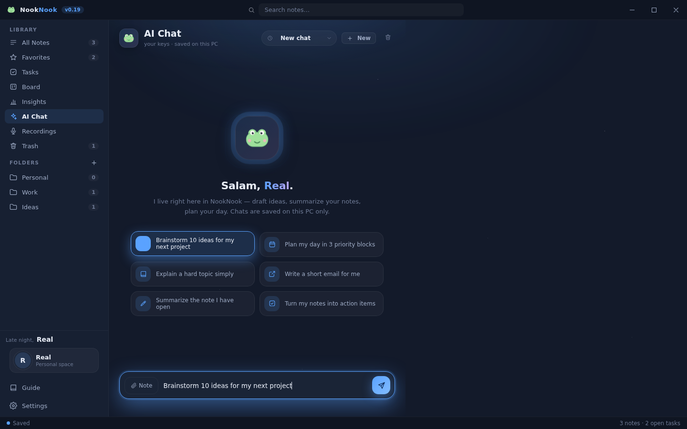
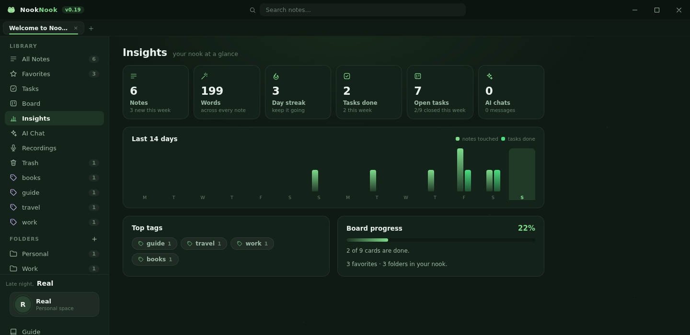
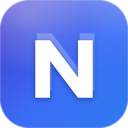

A whole notes desk, not just a notepad
NookNook bundles the tools you actually reach for every day — without shipping your life to a server.
Rich markdown notes
Folders, tabs, tags, favorites, find & replace, wiki-links, tables, highlights and checklists — with a live preview beside you.
Tasks with reminders
Due dates, priorities, repeats and subtasks. Real Windows notifications fire at reminder time.
Kanban board
Drag cards across To Do, In Progress and Done with buttery-smooth pointer dragging, labels and live progress.
AI, your key — your rules
Chat, summarize notes or turn them into tasks. OpenRouter, Z.ai (GLM), OpenAI, Groq, Gemini, DeepSeek, Ollama and more.
Meeting recorder
Record meetings as .wav straight to your disk — no upload, no account, never freezes the app. Play, rename, export.
Insights & streaks
Words written, day streaks, tasks done and a 14-day activity chart — computed locally from your own data.
Backups & export
One-click JSON backups you can restore anywhere, plus export any note as clean Markdown or a pretty web page.
Private by design
Everything lives in a local SQLite database on your PC. No servers, no telemetry, no accounts — ever.
24 themes & sound design
Dark and light looks for every mood, soft taps and chimes as you work, plus generative lofi that never repeats.
Command palette & shortcuts
Ctrl+K runs actions, jumps anywhere and switches any theme instantly. Ctrl+1..5 hops between Notes, Tasks, Board, Recordings and AI Chat.
Made to feel good, every day
Click any screen to see it up close. Every pixel is themeable and every animation is tuned to feel calm.



Pick a mood, any mood
Every theme is handcrafted — not a hue slider. Click a swatch to try it on the little desk below.
AI that answers to you — and only you
Paste the API key you already own and NookNook talks straight to your provider. The key never leaves your PC, and nothing you write is used to train anything.
- Chat about anything, right beside your notes
- Summarize long notes into clean, short briefs
- Turn messy notes into tidy tasks and board cards
Your notes never leave this PC
No account. No sync service. No analytics. The app works fully airborne — pull the network cable and nothing changes.
- Stored in a local SQLite database — the file is yours, open it anytime
- One-click JSON backup and restore, so you are never locked in
- AI only talks to the provider you choose, with the key you paste

NookNook vs typical cloud notes
The cloud is fine for other people. Your notebook deserves better.
| What matters | NookNook | Typical cloud notes app |
|---|---|---|
| Works with no internet | Always, 100% offline | Needs a connection for sync |
| Account required | None, ever | Sign-up wall in front of your notes |
| Where data lives | Your PC, in SQLite you can open | Vendor's servers |
| Installer size | About 2 MB | Often 100 MB or more |
| Telemetry & tracking | Zero | Usage analytics built in |
| AI control | Your key, your provider, 8+ options | Vendor's AI, or none |
| Price | Free and open source (MIT) | Subscription for real features |
Shipped so far
NookNook is in active daily development. Here is the recent trail — newest first.
Brand-new app icon — a clean double-N monogram on a blue-violet gradient, crisp from 16 px to 1024 px, plus GitHub and website polish.
Nook became NookNook — the doubled wordmark everywhere, a two-tone logo treatment, and every note, task and key survived the rename untouched.
Insights view with streaks and a 14-day activity chart, card detail modal on the board, a full command palette on Ctrl+K, real Windows task reminders and Ctrl+1..5 view jumps.
Board rebuilt — rAF-throttled pointer dragging with cached rects, glass columns, labels with right-click menus, due-date quick actions and a profile chip with avatars.
AI chat fixed for real and redesigned with a glowing hero orb, a launch splash with a shimmer bar, realistic sound effects and generative lofi that never repeats.
Every icon redrawn on one consistent 24 px grid — balanced optical weight, round caps, softer corners.
Fixed board drag on Windows — a pointer-based engine replaced the HTML5 drag that WebView2 swallowed, with ghost cards, autoscroll and touch support.
Soft redesign — pastel morning-sky onboarding and zero emojis: every emoji replaced with crisp SVG icons.
The standing goal: 5 new features or improvements every single day. Watch the repo and it shows.
Get NookNook for Windows
Free, tiny and ready in under a minute. Your notes stay yours — forever.
cd683d1448cd2ead64e276ccfeecaa6532e74f5ab4bdaabd4c25988111a6069e
v0.19.0 setup · Windows 10 / 11, 64-bit · about 2 MB download · no admin rights needed